用到的工具，xftp（文件互传），xshell（远程连接）
aliyun服务器防火墙开启的端口。80,22（ssh），3306（mysql），8000,9090
部署项目：
1，安装nginx
1>http://nginx.org/en/download.html
2>下载： wget http://nginx.org/download/nginx-1.17.0.tar.gz
3>解压压缩包 tar xf nginx-1.17.0.tar.gz
4>安装依赖 yum -y install pcre-devel zlib-devel
5>进入解压后的文件 安装nginx： ./configure --prefix=/usr/local/nginx
6>make 和 make install
7>启动nginx /usr/local/nginx/sbin/nginx 可通过浏览器访问服务器公网ip看到欢迎页面2，安装mysql数据库
安装依赖：yum -y install ncurses-devel gcc-* bzip-* yum -y install gcc-*安装cmake：
wget https://github.com/Kitware/CMake/releases/download/v3.14.4/cmake-3.14.4.tar.gz
解压cmake
进入cmake文件夹，运行configure命令 ./configure
没有error说明安装成功 然后cmake进行编译 make -j4 make install
查看cmake版本确认是否安装成功 cmake --version安装boost 1.59版本
下载: https://www.boost.org/users/history/version_1_59_0.html
解压boost，因为boost是绿化版，直接解压就好了
剪切boost文件夹 mv boost_1_59_0 /usr/local/boost安装mysql
从官网下载mysql5.7的社区版压缩包
解压并进入解压后的文件夹执行下面的命令：
cmake . -DCMAKE_INSTALL_PREFIX=/usr/local/mysql \
-DMYSQL_DATADIR=/usr/local/mysql/data/ \
-DMYSQL_UNIX_ADDR=/usr/local/mysql/mysql.sock \
-DWITH_INNOBASE_STORAGE_ENGINE=1 \
-DWITH_MYISAM_STORAGE_ENGINE=1 \
-DENABLED_LOCAL_INFILE=1 \
-DEXTRA_CHARSETS=all -DDEFAULT_CHARSET=utf8 -DDEFAULT_COLLATION=utf8_general_ci \
-DWITH_DEBUG=0 \
-DWITH_EMBEDDED_SERVER=1 \
-DDOWNLOAD_BOOST=1 -DENABLE_DOWNLOADS=1 -DWITH_BOOST=/usr/local/boost代表的意义分别是：
指定安装路径
指定数据目录
指定sock文件路径
安装Innodb存储引擎
安装Myisam存储引擎
允许使用Load data 命令从本地导入数据
安装所有字符串，默认字符串utf8，校验字符
关闭debug
生成一个libmysqld.a的库，这个库同时集成了mysql服务和客户端API
允许boost下载boost库文件没有报错的话进行编译 ： make -j4 make install如果在编译时候出错，或者make install后出错，可以重新编译make -j4和make install
因为可能网速问题，导致一些包没有下载下来，所以重新make -j4和make install
就好了cp /usr/local/mysql/support-files/mysql.server /etc/init.d/mysql
ll /usr/local/mysql/添加mysql的用户，用户名为mysql，并利用 chown 将指定文件的拥有者改为指定的用户mysql用户useradd -s /sbin/nologin -r mysql
chown mysql.mysql /usr/local/mysql/ -R
ll /usr/local/mysql/建立软连接ln -sf /usr/local/mysql/bin/* /usr/bin/
ln -sf /usr/local/mysql/lib/* /usr/lib/
ln -sf /usr/local/mysql/libexec/* /usr/local/libexec
ln -sf /usr/local/mysql/share/man/man1/* /usr/share/man/man1
ln -sf /usr/local/mysql/share/man/man8/* /usr/share/man/man8# 编辑配置文件
vim /etc/my.cnf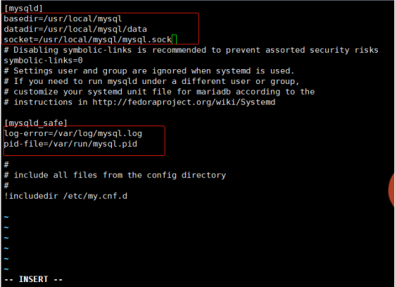
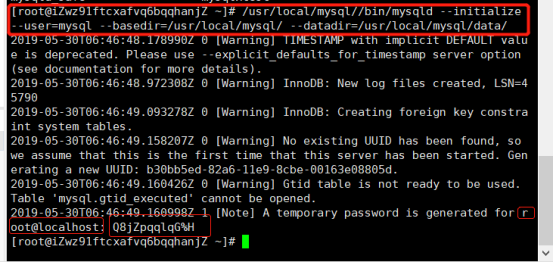
/usr/local/mysql//bin/mysqld --initialize --user=mysql --basedir=/usr/local/mysql/ --datadir=/usr/local/mysql/data/Q8jZpqqlqG%H 这个是mysql密码，一定记得记录下来
启动mysql
/etc/init.d/mysql startyum -y install lsof
lsof -i :3306设置mysql
mysql_secure_installation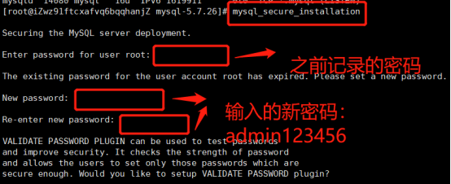
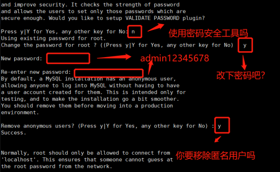
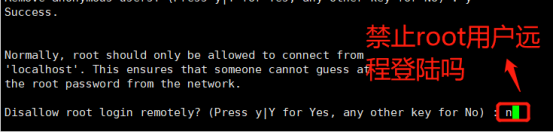
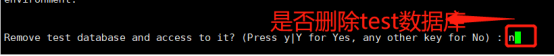
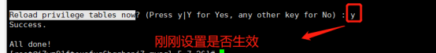
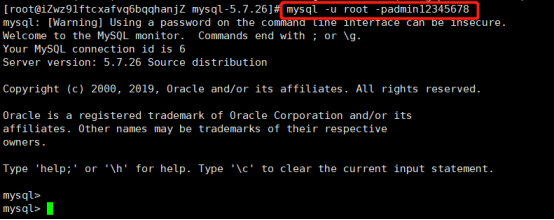
Ctr+d退出
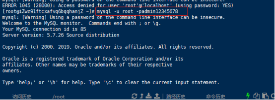
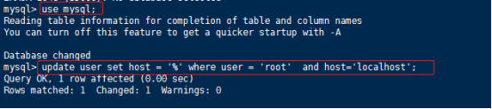
这样才能用Navicat去连接数据库
3，部署python
下载python文件 wget https://www.python.org/ftp/python/3.7.1/Python-3.7.1.tar.xz
解压并进入python文件夹
yum -y install gcc-* openssl-* libffi-devel sqlite-devel
./configure --enable-optimizations --with-openssl=/usr/bin/openssl
make -j8 make install
默认安装路径：/usr/local/lib/python3.7
升级pip pip3 install --upgrade pip
安装虚拟环境，因为有可能上线多个项目，每个项目所需工具不一样，所以创建虚拟环境，一个项目一个环境，互不影响：pip3 install virtualenv
创建一个虚拟环境 virtualenv -p python3 web
使得虚拟环境生效：source web/bin/activate
然后在web虚拟环境下安装Django: pip3 install django==2.1.8
创建一个django项目： django-admin.py startproject myweb
django-admin.py
修改配置文件
vim myweb/settings.py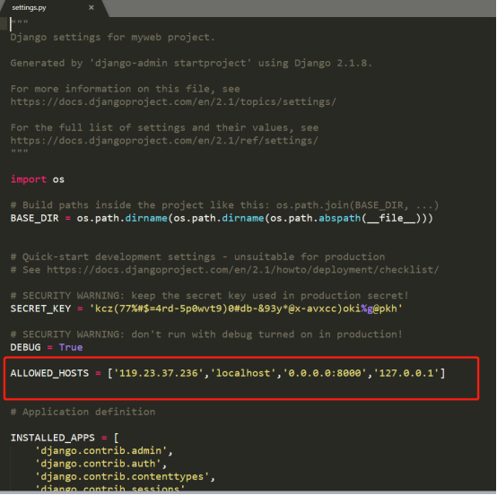
指定端口，启动Django项目：python3 manage.py runserver 0.0.0.0:8000
通过浏览器访问服务器官网ip+端口号可查看页面信息 119.23.204.209:8000
服务器mysql版本：5.7 Django版本：2.1 python版本：3.74，发布网站
安装uwsgi : pip install uwsgi pip3 install uwsgi
mkdir /etc/uwsgi
vim /etc/uwsgi/uwsgi.ini 写入以下内容
[uwsgi]
uid=root //谁启动uwgi
gid=root //组是谁
socket = 127.0.0.1:9090 //监听的ip地址和端口是多少
master = true //启动主进程
vhost = true //多站模式，可以发布多个网站
no-site = true //多站模式时不设置入口模块和文件
workers = 2 //子进程数
reload-mercy = 10 //平滑的重启
vacuum = true //退出、重启时清理文件
max-requests = 1000 //开启10000个进程后，启动respawn下
limit-as = 512 //将进程的总内存量控制在512M
buffer-size = 30000 //buffer的大小
pidfile = /var/run/uwsgi9090.pid //pid文件，用于下面的脚本启动、停止该进程
daemonize = /var/log/uwsgi9090.log
pythonpath=/root/web/lib/python3.7/site-packages启动uwsgi：uwsgi --ini /etc/uwsgi/uwsgi.ini查看启用端口信息： netstat -ntpl
关闭uwsgi：
cat /var/run/uwsgi9090.pid kill -9 11830
vim /etc/init.d/uwsgi 写入以下内容
#! /bin/sh
DESC="uwsgi daemon"
NAME=uwsgi
DAEMON=/usr/local/bin/uwsgi
CONFIGFILE=/etc/uwsgi/$NAME.ini
PIDFILE=/var/run/${NAME}9090.pid
SCRIPTNAME=/etc/init.d/$NAME
FIFOFILE=/tmp/uwsgififo
set -e
[ -x "$DAEMON" ] || exit 0
do_start() {
if [ ! -f $PIDFILE ];then
$DAEMON $CONFIGFILE || echo -n "uwsgi running"
else
echo "The PID is exit..."
fi
}
do_stop() {
if [ -f $PIDFILE ];then
$DAEMON --stop $PIDFILE || echo -n "uwsgi not running"
rm -f $PIDFILE
echo "$DAEMON STOPED."
else
echo "The $PIDFILE dosen't found"
fi
}
do_reload() {
if [ -p $PIDFILE ];then
echo w > $FIFOFILE
else
$DAEMON --touch--workers--reload $PIDFILE || echo -n "uwsgi can't reload"
fi
}
do_status() {
ps aux|grep $DAEMON
}
case "$1" in
status)
echo -en "Status $NAME: \n"
do_status
;;
start)
echo -en "Starting $NAME: \n"
do_start
;;
stop)
echo -en "Stopping $NAME: \n"
do_stop
;;
reload|graceful)
echo -en "Reloading $NAME: \n"
do_reload
;;
*)
echo "Usage: $SCRIPTNAME {start|stop|reload}" >&2
exit 3
;;
esac
exit 0# 设置权限
chmod 755 /etc/init.d/uwsgi
启动uwsgi /etc/init.d/uwsgi start
vim /usr/local/nginx/conf/nginx.conf写入以下内容:
注意：如果域名已经解析过了，server_name localhost;改为server_name www.terroristhouse.com;server {
listen 80;
server_name localhost;
location / {
include uwsgi_params;
uwsgi_pass 127.0.0.1:9090;
uwsgi_param UWSGI_SCRIPT myweb.wsgi;
uwsgi_param UWSGI_CHDIR /usr/local/nginx/html/myweb;
index index.html index.htm;
client_max_body_size 35m;
#uwsgi_cache_valid 1m;
#uwsgi_temp_file_write_size 64k;
#uwsgi_busy_buffers_size 64k;
#uwsgi_buffers 8 64k;
#uwsgi_buffer_size 64k;
#uwsgi_read_timeout 300;
#uwsgi_send_timeout 300;
#uwsgi_connect_timeout 300;
}
}#移动项目到指定文件夹
mv myweb /usr/local/nginx/html/静态文件配置
/usr/local/nginx/conf/nginx.conf文件中设置
server {
listen 80;
server_name www.terroristhouse.com;
location /static/ {
#autoindex on;
alias /usr/local/nginx/html/mysite7/static/;
break;
#alias /usr/local/nginx/html/collectedstatic;
}
location /media/ {
alias /usr/local/nginx/html/mysite7/media/;
break;
#autoindex on;
#alias /usr/local/nginx/html/collectedstatic;
}收集本地项目安装的库项目目录下
导出库:pip3 freeze > requirements.txt
在服务器虚拟项目中安装库
导入库: pip3 install -r requirements.txt重启 uwsgi和nginx 用浏览器访问域名可查看页面
/etc/init.d/uwsgi stop 停止运行uwsgi
/etc/init.d/uwsgi start 开启运行uwsgi
killall -9 nginx 关闭nginx的进程
/usr/local/nginx/sbin/nginx 启动和查看nginx服务done。